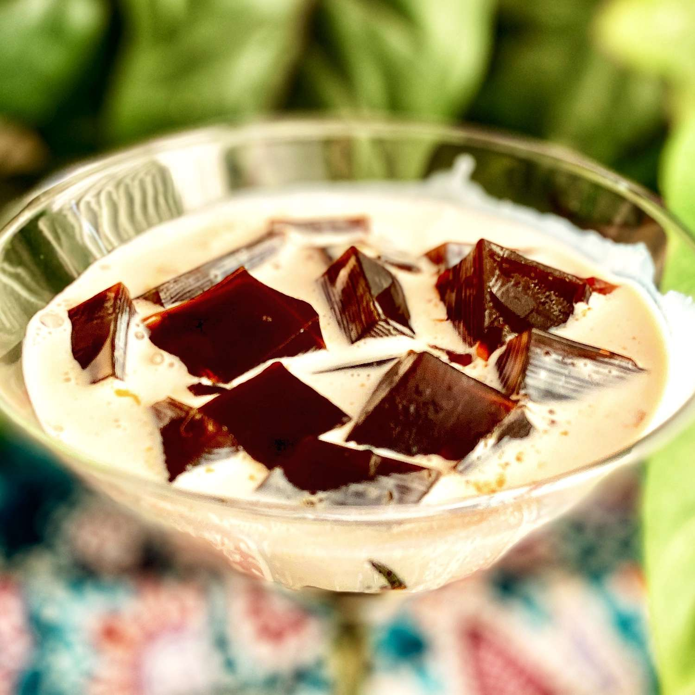

Coffee Jelly

Although once common in British and American cookbooks, it is now most common in Japan, where it can be found in most restaurants and convenience stores. A great way to serve it is with frozen whipped cream and chocolate sauce, although it's also delicious with ice cream, regular whipped cream, or flavored coffee cream. It can be served solid in glasses or cubed in bowls.
Ingredients
- 2 tablespoons hot water
- 1 (1/4 ounce) package unflavored gelatin
- 2 cups fresh brewed coffee
- 3 tablespoons white sugar
Steps
- Stir together gelatin and hot water in a small bowl until gelatin dissolves; pour into a saucepan. Stir in coffee and sugar, and bring to a boil over high heat.
- Pour coffee mixture into a shallow, 9-inch square or 7x11-inch baking dish. Chill in the refrigerator until solidified, 6 to 7 hours.
- Cut coffee jelly into cubes to serve.